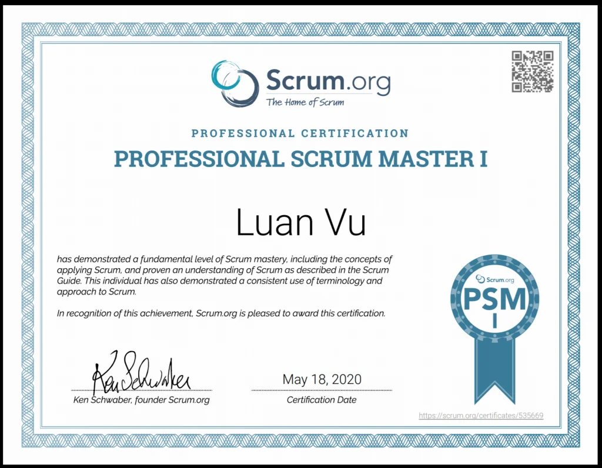

Từ không biết gì đến PSM I, chưa đến 24 tiếng!

Từ không biết gì đến PSM I, chưa đến 24 tiếng!
Nghe có vẻ thật sự điên rồ, nhưng điều này là hoàn toàn có thể. Professional Scrum Master I (PSM I) có khó không? Không hề. Một chứng chỉ mà kiến thức chỉ gói gọn trong 19 trang giấy thì rõ ràng không phải khó. Dưới đây mình sẽ đưa ra lộ trình ôn tập mà các bạn có thể theo.
Khởi điểm
Trước đây, mình không hề có bất kỳ khái niệm gì về Scrum cả, đó là điều chắc chắn. Scrum trong mình chỉ là cách đây 3 tháng, bắt đầu làm dự án, khách hàng bảo mỗi Sprint là 1 tuần, hàng ngày đi họp và cuối tuần demo. Đương nhiên là dù làm 3 tháng nhưng mình vẫn chả hiểu Sprint là gì, họp Daily làm gì, thậm chí Scrum là gì. Tóm lại là không biết gì cả.
Và rồi tình cờ có một người bạn có post chứng chỉ PSM I mà họ vừa thi được, nhân lúc mình cũng đang rảnh rỗi, nên thử tìm hiểu.
Tìm hiểu
Thói quen của mình khi bắt đầu ôn chứng chỉ, chính là mua một đống sách và khóa học. Mình bắt đầu mua 2 cuốn sách về Scrum, đọc được 15 trang đầu, không hiểu gì cả ! Thế là mình tìm hiểu thêm về lộ trình ôn thi của những người khác trên internet, và mình thật sự giật mình, vì nó quá đơn giản!
Bắt đầu
Tất cả kiến thức mà bạn cần có để thi đỗ chứng chỉ, gói gọn trong cái gọi là Scrum Guide, 19 trang, bạn có thể đọc tại https://www.scrumguides.org/scrum-guide.html . Vậy, đầu tiên, bạn cần đọc guide
Scrum Guide — 10 tiếng
Đừng nghĩ rằng đọc 19 trang là bạn ung dung đi thi và chắc chắn đỗ, trừ khi bạn có thể thuộc lòng 19 trang này (được viết bằng tiếng Anh). Khuyến khích đọc càng nhiều càng tốt, có người thậm chí phải đọc đến 10 lần, nhưng mình khuyên chỉ đọc tối đa 5 lần, vì một khi đã không hiểu thì đọc nữa cũng vô ích.
Đọc nhiều lần, không có nghĩa là đọc liên tục không ngừng nghỉ, đây đâu phải tụng kinh hay thần chú! Nên đọc lần đầu tiên để nắm được. Sau đó xem khóa học (sẽ nói sau), rồi lại quay lại đọc những chỗ chưa hiểu. Tiếp đó khi làm Practice test, cũng nên quay lại đọc những chỗ chưa hiểu. Và cuối cùng, bạn nên làm một phần ghi chú tóm tắt lại nội dung của guide, và đương nhiên bạn phải đọc lại mới làm được rồi. Túm lại, mình tính ra là đọc khoảng 5 lần, mỗi lần mất 1 tiếng (3 phút/trang đã là khá chậm rồi).
Fact: Mình chỉ đọc đúng 1 lần, là lần làm ghi chú, 4 lần kia mình đều nghe, tranh thủ lúc rửa bát.
Khóa học online — 2 tiếng
Nếu là một người không có khái niệm gì về Scrum, việc chỉ đọc lý thuyết thôi sẽ chỉ tổ đau đầu chứ sao mà thấm nhuần được. Vậy nên, mình khuyến khích học thêm khóa online, theo mình thì khoảng $10, 3 bài Practive Test và 2 tiếng cuộc đời của bạn cho khóa học là vô cùng xứng đáng.
Khóa học đó đây https://www.udemy.com/course/scrum-master-certification-preparation-mock-exam-questions-psm-i/
Nội dung của khóa học, cũng sẽ không nằm ngoài Scrum Guide, tuy nhiên, khóa học sẽ cho bạn ví dụ trực quan hơn và cung cấp một số tip & trick khi thi. Mình đánh giá khóa học này chính là chìa khóa quan trọng nhất.
Note: các bạn có thể bỏ qua phần live webinar, vì nó không liên quan đến bài thi nhiều cho lắm.
Fact: Mình cũng tranh thủ lúc rửa bát để xem hết 2 tiếng của khóa học
Làm Practice test — 10 tiếng
Practice test cũng vô cùng quan trọng. Kiến thức rõ ràng chỉ vẻn vẹn trong 19 trang giấy, do đó, tập câu hỏi của đề thi thật cũng không thể vô biên được. Theo mình đánh giá, sẽ có khoảng 60% số câu hỏi trong đề thi thật khá sát với các bài Practice test. Ngoài ra, làm nhiều Practice test sẽ giúp bạn làm quen với nhịp độ của bài thi, luyện được cách tư duy nhanh. Trên thực tế khi thi, mình chỉ mất 40 phút cho 80 câu hỏi, 20 phút còn lại mình dành cho việc review lại 7–8 câu hỏi.
Một số bài test các bạn có thể tham khảo
https://mlapshin.com/index.php/scrum-quizzes/sm-learning-mode/ (Free) Bạn có thể thử Real Mode, nhưng mình nghĩ không cần, vì đề ở đây khá đơn giản, Real hay Learning cũng không khác lắm.
Open Assessments (Free). Đề này của chính chủ nên hoàn toàn đúng trình độ của đề thật. Tuy nhiên, họ chỉ cho 30 câu và làm trong 30 phút
3 bài Practice test trong khóa học trên mình đã giới thiệu
Sau khi đã học hết các kiến thức ở trên, việc làm test cũng không quá khó, mình thường chỉ mất khoảng 40 phút cho mỗi bài test trên 80 câu, thời gian còn lại là review. Vậy nên mình cứ tính khoảng 90 phút một lần thi. Khi làm một câu nào đó, bạn nên luyện xem từ khóa của câu và phương pháp loại trừ, kinh nghiệm đi thi quá nhiều lần mình đúc rút được. Ngoài ra, tiếng Anh của bạn cũng không nên quá dở. Ví dụ mình không biết từ “prohibit” có nghĩa là “cấm” dẫn đến khi làm thi thử đã bị sai 1 câu. Vậy nên, hãy cải thiện vốn từ trong các bài thi thử.
Bạn nên đạt được trên 80% trong những bài Practice test. Trong khóa học mình kể trên, có 3 bài test, mình có làm đi làm lại, tổng ra khoảng 5 lần. Bài trên https://mlapshin.com mình chỉ làm 1 lần, vì nó quá dễ. Open Assessments thì cũng làm 1 lần duy nhất, vì mình đã khá chắc hết rồi.
Khi review lại phần test đã làm, đừng bao giờ cố nhớ câu hỏi và câu trả lời. Hãy đọc kỹ lại tất cả, câu hỏi, câu trả lời và phần giải thích, đối chiếu với Scrum Guide để hiểu. Nếu bạn chỉ cố dump đề, bạn sẽ mắc kẹt vào những câu chơi chữ trong khi thi thật. Khi thi thật, mình đã rất bất ngờ vì đề thi thật sẽ có khoảng 30% số câu khó hơn rất nhiều so với các phần Practice test. Những câu hỏi đó sẽ biến đổi một chút câu từ, đáp án cũng sẽ nghe có vẻ khang khác so với Scrum Guide, nhưng thật ra, bản chất không hề nằm ngoài Scrum Guide. Vậy nên, việc hiểu rõ là vô cùng quan trọng.
Khi bạn đã tự tin, đã đến lúc đi thi, hãy nhờ người khác thi hộ nữa là xong (đùa thôi)
Fact: cái này mình không tranh thủ lúc rửa bát được, vì tay dính xà bông mà. Mình thường tranh thủ trước lúc đi ngủ hoặc buổi trưa rảnh rỗi, thậm chí là mấy cuộc họp chán ngắt.
Thi, 1 tiếng 10 phút
Dưới đây là chi tiết về bài thi, để xem cập nhật mới nhất, các bạn nên vào trang chủ tại https://www.scrum.org/professional-scrum-master-i-certification#Details
Fee: $150 USD per attempt
Passing score: 85%
Time limit: 60 minutes
Number of Questions: 80
Format: Multiple Choice, Multiple Answer and True/False
Difficulty: Intermediate
Language: English only
Scrum Resources
Required course: None
Recommended courses: Professional Scrum Foundations or Professional Scrum Master
Practice Assessment: Scrum Open
Ways to Learn More to help you prepare
Passwords have no expiration date, but are valid for one attempt only
Thi là thi online, tại nhà, bạn có thể thoải mái sử dụng mọi thứ. Tuy nhiên, số lượng câu hỏi lớn (80 câu), thời gian ít ỏi (chỉ 60 phút) và điểm đạt là rất cao (85%), mọi sai lầm dù nhỏ đều phải trả giá, do đó, đừng quá phụ thuộc vào những thứ bên ngoài, trừ trường hợp bạn nhờ người khác thi (không nên vậy).
Cách thi khá đơn giản, bạn đăng ký tài khoản trên https://www.scrum.org/, mua Assessment, một mật khẩu được gửi về mail của bạn và bạn có thể bắt đầu thi ngay lập tức bằng mật khẩu vừa rồi.
Một nhược điểm cực lớn của thi online, chính là tốc độ mạng. Nếu mạng bạn chậm hoặc máy bạn dùng chạy chậm thì đúng là thảm họa. Mình nghĩ tối ưu nhất, các bạn có thể dùng máy tính bảng, vì tốc độ tốt, thao tác chạm cảm ứng (thậm chí là screenshoot) sẽ dễ dàng và nhanh chóng hơn. Sử dụng một chiếc máy tính bảng để thi và một máy tính cá nhân bên cạnh để tra cứu cũng không phải ý tưởng tồi. Đừng quên phần ghi chú mình đã đề cập phần trên, sẽ tiện cho bạn tra cứu.
Một điều nữa là khi nhấn Next, Previous thì đặc biệt chú ý, trong thời gian tải trang, rất có thể bạn lại bấm nhầm và chọn lại đáp án sai. Hoặc nếu run tay quá, bạn rất dễ tải lại trang hoặc đóng tab/trình duyệt, mình cũng không rõ có sao không, nhưng rõ ràng sẽ rắc rối đấy. Hãy cẩn thận trên từng lần chạm.
Kết quả

Kết luận
Vậy là mình đã tóm gọn lại lộ trình ôn và thi PSM I, chỉ trong vòng 23 tiếng 10 phút. Thực tế thì mình ôn và thi mất 1 tuần, vì mình không rửa bát liên tục 24 tiếng. Người bạn mình kể thì mất 4 ngày. Mình nghĩ chỉ với 2 ngày cuối tuần ôn liên tục thì có khi tổng thời gian còn thấp hơn 23 tiếng.
Tuy nhiên, viết bài là cách mình làm nhưng $150 là bạn bỏ ra, và đây cũng không phải cuộc thi tốc độ, vậy nên cũng đừng quá vội vàng mà đánh rơi tiền bạc. Hãy thi khi bạn cảm thấy thực sự sẵn sàng. Chúc may mắn.